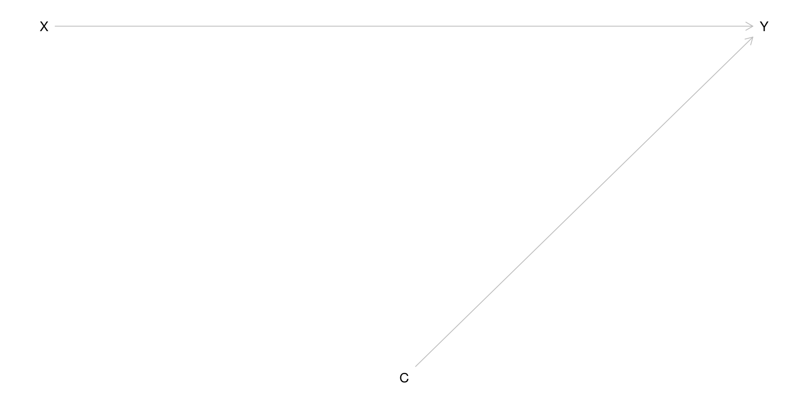
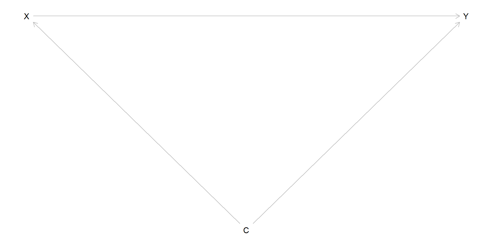

Follow them up for 8 years (very closely to ensure compliance)
Measure height at age 18 - 20
Causal parameter of interest is
\[
E\{Y(X = 1)\} - E\{Y(X = 0)\}
\]
Identifiability
Is the effect of interest identifiable from these data?
Yes! The dag is simple in this case:

Estimation
Our usual estimand is
\[
E(Y | X = 1) - E(Y | X = 0).
\]
This defines an estimator of the causal parameter because
\[
E(Y | X = x) = E\{Y(X = x) | X = x\}
\] which is always true (sometimes called the consistency assumption/axiom).
Because of randomization, the potential outcomes are independent of the treatment assignment: \[
E\{Y(X = x) | X = x\} = E\{Y(X = x)\}
\]
Estimation continued
An estimator is \[
\frac{\sum_i Y_i X_i}{\sum_i X_i} - \frac{\sum_i Y_i (1 - X_i)}{\sum_i (1 - X_i)}
\] which is what you get from a t-test.
This is not the only possible estimator. It is consistent for the causal effect of interest, which means that as the sample size increases, the estimator will approach the truth. There are other properties to consider
robustness, sensitivity of the estimator to the assumptions (not so relevant for this example)
efficiency, how precise the estimator is compared to alternatives
Alternative estimand
Linear regression adjusted for \(C\):
\[
E(Y | X, C) = \beta_0 + \beta_1 X + \beta_2 C
\]
As long as there is no interaction, \(\beta_1\) has the interpretation \(E(Y | X = 1) - E(Y | X = 0)\), so what’s the difference?
The estimator is different from the t-test, and it involves \(C\)
Simulation
generate_ests <-function(n =300) { X <-rbinom(n, 1, .5) C <-rnorm(n) Y <-1+1* X + C +rnorm(n)c(ttest =t.test(Y ~ X)$estimate |>diff(), lm =lm(Y ~ X + C)$coefficients[2])}simul <-t(replicate(1e3, generate_ests()))summary(simul)
ttest.mean in group 1 lm.X
Min. :0.4874 Min. :0.6407
1st Qu.:0.8882 1st Qu.:0.9159
Median :0.9962 Median :0.9953
Mean :0.9969 Mean :0.9968
3rd Qu.:1.1065 3rd Qu.:1.0707
Max. :1.4630 Max. :1.3408
apply(simul, 2, sd)
ttest.mean in group 1 lm.X
0.1586819 0.1145141
It gives the same answer, and is much more efficient. What are the drawbacks?
We need to get the outcome model correct, so it is potentially less robust.
However, linear regression is quite robust, it is hard to get the outcome model wrong enough to make a difference.
Simulation 2
generate_ests2 <-function(n =300) { X <-rbinom(n, 1, .5) C <-rnorm(n) U <-rnorm(n) Y <-1+1* X +5* X * (C >1) -3* (C <1) +rnorm(n)c(ttest =t.test(Y ~ X)$estimate |>diff(), lm =lm(Y ~ X + C)$coefficients[2])}simul <-t(replicate(1e3, generate_ests2()))summary(simul)
ttest.mean in group 1 lm.X
Min. :0.979 Min. :1.158
1st Qu.:1.625 1st Qu.:1.639
Median :1.819 Median :1.804
Mean :1.815 Mean :1.794
3rd Qu.:1.995 3rd Qu.:1.950
Max. :2.655 Max. :2.573
apply(simul, 2, sd)
ttest.mean in group 1 lm.X
0.2822757 0.2317679
Warning
Lessons from linear regression do not often apply to other types of regression. For example, the coefficient in an adjusted logistic model is not an estimand for the causal difference.
A confounded setting
The more typical scenario since we can’t force children to drink coffee:

How do we estimate this now?
The g-forumla
Let’s focus on the first term \(E\{Y(X = 1)\}\)
\[
E\{Y(1)\} = \sum_c E(Y(1) | C = c) P(C = c) = \sum_c E(Y(1) | C = c, X = 1) P(C = c)
\]\[
= \sum_c E(Y | C = c, X = 1) P(C = c)
\] under the assumptions in the dag.
The first component inside the sum is an outcome model, we can use a prediction from linear regression.
For the second component, we can use the empirical distribution. This is based on the random sampling principle: if I have \(n\) subjects in my sample, and the \(i\) th subject’s covariates are \(C_i\), my best guess of the probability of observing data like \(C_i\) is \(1/n\)
Regression standardization
The regression standardization estimator of the g-formula is
\[
\hat{E}\{Y(1)\} = \sum_{i=1}^n \hat{E}(Y | X = 1, C = C_i) \cdot \frac{1}{n}.
\]
The basic approach:
Fit an outcome model involving the exposure of interest and confounders
Copy the data used to fit the model and then:
Replace observed values of \(X\) with 1, and get predictions from the model: \(\hat{E}(Y_i(1))\)
Replace observed values of \(X\) with 0, and get predictions from the model: \(\hat{E}(Y_i(0))\)
Take the mean and then the difference: \(\frac{1}{n}\sum_i \hat{E}(Y_i(1)) - \hat{E}(Y_i(0))\)
Linear regression
Example, using simulated data:
n <-800C <-rnorm(n)X <-rbinom(n, 1, plogis(-1+2* C))Y <-1+1* X + C + .5* X * C +rnorm(n)simdata <-data.frame(C, Y, X)fit <-glm(Y ~ C + X + C:X, data = simdata)simdata0 <- simdata1 <- simdatasimdata0$X <-0simdata1$X <-1EYi_1 <-predict(fit, newdata = simdata1)EYi_0 <-predict(fit, newdata = simdata0)mean(EYi_1) -mean(EYi_0)
[1] 1.048538
Inference?
One option is to use the bootstrap:
B <-1000bootests <-rep(NA, B)for(i in1:B) { simdata.star <- simdata[sample(1:nrow(simdata), nrow(simdata), replace =TRUE), ] fit <-glm(Y ~ C + X + C:X, data = simdata.star) simdata0 <- simdata1 <- simdata.star simdata0$X <-0 simdata1$X <-1 bootests[i] <-mean(predict(fit, newdata = simdata1)) -mean(predict(fit, newdata = simdata0))}sd(bootests)
[1] 0.1003283
quantile(bootests, c(0.025, 0.9756))
2.5% 97.56%
0.8594518 1.2515164
Or you can use the stdReg package
library("stdReg")stdfit <-stdGlm(fit, data = simdata, X ="X", x =c(0, 1))summary(stdfit, contrast ="difference", reference =0)
Formula: Y ~ C + X + C:X
Family: gaussian
Link function: identity
Exposure: X
Reference level: X = 0
Contrast: difference
Estimate Std. Error lower 0.95 upper 0.95
0 0.000 0.000 0.000 0.000
1 0.734 0.106 0.526 0.943
Logistic regression
With a binary outcome, we would tend to use logistic regression.
\[
\mbox{logit}(p\{Y = 1 | X, C\}) = \beta_0 + \beta_1 X + \beta_2 C
\]
but the coefficient \(\beta_1\) is not a marginal causal contrast, i.e., there is no function \(g\) such that
\[
\beta_1 = g\{Y(1), Y(0)\},
\] the reason being that the nonlinear function does not simplify, so that it continues to depend on \(C\), it is a conditional causal contrast. Besides, we want the risk difference or risk ratio, so we need to standardize with logistic regression.
Binary example
The steps are nearly identical:
n <-800C <-rnorm(n)X <-rbinom(n, 1, plogis(-1+2* C))Y <-rbinom(n, 1, plogis(1+1* X + C + .5* X * C))simdata <-data.frame(C, Y, X)fit <-glm(Y ~ C + X + C:X, data = simdata, family ="binomial")simdata0 <- simdata1 <- simdatasimdata0$X <-0simdata1$X <-1EYi_1 <-predict(fit, newdata = simdata1, type ="response")EYi_0 <-predict(fit, newdata = simdata0, type ="response")mean(EYi_1) -mean(EYi_0)
[1] 0.1169359
mean(EYi_1) /mean(EYi_0)
[1] 1.16908
Or use the stdReg package
stdfit <-stdGlm(fit, X ="X", x =c(0,1), data = simdata)summary(stdfit, contrast ="difference", reference =0)
Formula: Y ~ C + X + C:X
Family: binomial
Link function: logit
Exposure: X
Reference level: X = 0
Contrast: difference
Estimate Std. Error lower 0.95 upper 0.95
0 0.000 0.00 0.0000 0.000
1 0.117 0.05 0.0189 0.215
summary(stdfit, contrast ="ratio", reference =0)
Formula: Y ~ C + X + C:X
Family: binomial
Link function: logit
Exposure: X
Reference level: X = 0
Contrast: ratio
Estimate Std. Error lower 0.95 upper 0.95
0 1.00 0.0000 1.00 1.00
1 1.17 0.0741 1.02 1.31
Cox regression and other survival models
For a time to event outcome \(Y\), the Cox model assumes \[
\lim_{\delta \rightarrow 0} \frac{1}{\delta}p\{t \leq Y < t + \delta | Y \geq t, X, C\} = \lambda_0(t) \exp(\beta_1 X + \beta_2 C)
\]
\(\beta_1\) is not generally a causal contrast, for different reasons than the logistic model. Hence we need to standardize to get a contrast of survival probabilities such as \[
p\{Y(1) > \tau\} - p\{Y(0) > \tau\}
\] for a given time \(\tau\).
The standardization procedure is basically the same
Note
To be pedantic, to get a prediction of the survival probability, you also need the Breslow estimator of the baseline hazard. Note that the predictions are still subject to the proportional hazards assumption.
sdata <- rotterdamcfit <-coxph(Surv(dtime, death) ~ hormon + age + meno + grade + er, data = sdata, ties ="breslow")sdata0 <- sdata1 <- sdatasdata0$hormon <-0sdata1$hormon <-1Ey0t <-survfit(cfit, newdata = sdata0, se.fit =FALSE)Ey1t <-survfit(cfit, newdata = sdata1, se.fit =FALSE)mean(Ey1t$surv[max(which(Ey1t$time <=3000)), ]) -mean(Ey0t$surv[max(which(Ey0t$time <=3000)), ])
[1] -0.07465547
or use stdCoxph
stdcfit <-stdCoxph(cfit, data = sdata, X ="hormon", x =c(0, 1), t =3000)summary(stdcfit, contrast ="difference", reference =0)
Formula: Surv(dtime, death) ~ hormon + age + meno + grade + er
Exposure: hormon
Reference level: hormon = 0
Contrast: difference
Survival functions evaluated at t = 3000
Estimate Std. Error lower 0.95 upper 0.95
0 0.0000 0.0000 0.000 0.000
1 -0.0747 0.0274 -0.128 -0.021
Summary and comments
Regression standardization is a method to estimate causal effects, for all types of exposures (binary, categorical, continuous)
It works when the outcome model is correctly specified for confounding, i.e., all confounders are included in the model in the correct functional form (nonlinearities, interactions, etc.)
Basic steps:
Fit an outcome regression model (can also fit two, separately by the exposure levels). Use diagnostics to make sure the model is as flexible as it needs to be
Create copies of the data, and set the exposure levels to the desired levels for the contrast
Predict the potential outcome for each individual given their observed covariates
Take the means and construct the contrast of interest (difference or ratio)